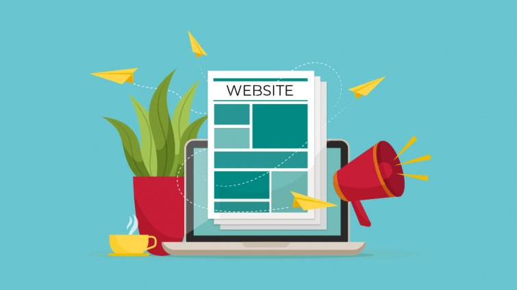

WEB dan Manfaatnya
Website merupakan halaman web yang saling berhubungan atau berkaitan yang biasanya berisikan kumpulan informasi berbentuk data teks, gambar, animasi, audio, video maupun gabungan dari semuanya yang biasanya dibuat untuk personal, organisasi ataupun perusahaan.
Dari penjelasan diatas kita dapat membedakan bahwa web bisa dibedakan menjadi 2 yaitu website statis maupun dinamis.
Bersifat statis bila isi informasinya tetap dan isi informasinya hanya dari pemilik website sedangkan web yang bersifat dinamis apabila isi informasinya selalu berubah-ubah dan dapat diubah-ubah oleh pemilik maupun pengguna website. Contoh web statis : website profil perusahaan, sedangkan contoh web dinamis seperti facebook, twitter, askfm, dll.
selain itu website jua memiliki manfaat, seperti :
1. Sarana Penjualan Produk maupun Jasa.
dengan website kita bisa dengan mudah menjual produk kita atau jasa kita, sebab akses menuju webs kita mudah diakses oleh banyak orang dengan cukup menggunakan internet.
2. Mempermudah Komunikasi secara Online.
dengan adanya internet, kita bisa dengan mudah melakukan komunikasi dengan cepat dan secara live tanpa harus menunggu seperti surat. kita bisa mengakses facebook, twitter, dll untuk berkomunikasi secara online.
3. Memperkenalkan Company Profile Perusahaan.
jika kalian memiliki atau ingin membangun sebuah usaha, perusahaan kalian bisa dengan mudah di perkenalkan kepada massa dengan website.
4. Mendatangkan konsumen baru.
dengan website kita bisa dengan mudah mengajak konsumen baru untuk usaha kita dengan ikut sebuah grup ataupun organisasi secara online.
5. Branding .
dengan web kita bisa dengan mudah branding sebuah usaha kita dengan menjadikannya sebuah iklan atau dengan masuk ke grup grup website tertentu.
6. Kemudahan Memberikan dan Mengetahui Informasi.
dengan website kita bisa dengan mudah mencari informasi baik sebuah ilmu pengetahuan ataupun berita di dalam maupun luar negeri.
7. Mencari rekan
dengan website kita bisa mencari rekan baru seperti teman ataupun menjalin kerja sama dengan orang lain. seperti misalnya kita punya usaha dan kita bisa mencari rekan kerja sama dengan pengusaha lain dengan website.

Sejarah website
Website pertama kali dibuat oleh Tim Berners-Lee pada akhir 1980an dan baru resmi online pada tahun 1991.
Tujuan awal Tim Berners-Lee membuat sebuah website adalah supaya lebih memudahkan para peneliti di tempatnya bekerja ketika akan bertukar atau melakukan perubahan informasi.
Jika Anda ingin mengetahui seperti apa tampilannya, silakan akses tautan berikut http://info.cern.ch/. Pada saat itu, website mulai dapat digunakan secara gratis oleh publik baru diumumkan oleh CERN tepatnya tanggal 30 April 1993.
Website dapat dimiliki oleh individu, organisasi, atau perusahaan. Pada umumnya sebuah website akan menampilkan informasi atau satu topik tertentu, meskipun saat ini banyak website yang menampilkan berbagai informasi dengan topik yang berbeda.